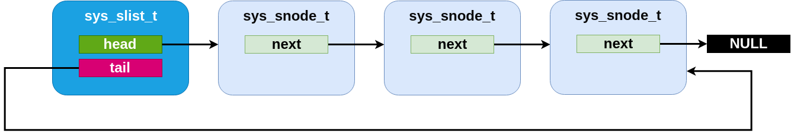

Single-linked List
Zephyr provides a sys_slist_t type for storing simple
singly-linked list data (i.e. data where each list element stores a
pointer to the next element, but not the previous one). This supports
constant-time access to the first (head) and last (tail) elements of
the list, insertion before the head and after the tail of the list and
constant time removal of the head. Removal of subsequent nodes
requires access to the “previous” pointer and thus can only be
performed in linear time by searching the list.
The sys_slist_t struct may be instantiated by the user in any
accessible memory. It should be initialized with either
sys_slist_init() or by static assignment from SYS_SLIST_STATIC_INIT
before use. Its interior fields are opaque and should not be accessed
by user code.
The end nodes of a list may be retrieved with
sys_slist_peek_head() and sys_slist_peek_tail(), which will
return NULL if the list is empty, otherwise a pointer to a
sys_snode_t struct.
The sys_snode_t struct represents the data to be inserted. In
general, it is expected to be allocated/controlled by the user,
usually embedded within a struct which is to be added to the list.
The container struct pointer may be retrieved from a list node using
SYS_SLIST_CONTAINER, passing it the struct name of the
containing struct and the field name of the node. Internally, the
sys_snode_t struct contains only a next pointer, which may be
accessed with sys_slist_peek_next().
Lists may be modified by adding a single node at the head or tail with
sys_slist_prepend() and sys_slist_append(). They may also
have a node added to an interior point with sys_slist_insert(),
which inserts a new node after an existing one. Similarly
sys_slist_remove() will remove a node given a pointer to its
predecessor. These operations are all constant time.
Convenience routines exist for more complicated modifications to a
list. sys_slist_merge_slist() will append an entire list to an
existing one. sys_slist_append_list() will append a bounded
subset of an existing list in constant time. And
sys_slist_find_and_remove() will search a list (in linear time)
for a given node and remove it if present.
Finally the slist implementation provides a set of “for each” macros
that allows for iterating over a list in a natural way without needing
to manually traverse the next pointers. SYS_SLIST_FOR_EACH_NODE
will enumerate every node in a list given a local variable to store
the node pointer. SYS_SLIST_FOR_EACH_NODE_SAFE behaves
similarly, but has a more complicated implementation that requires an
extra scratch variable for storage and allows the user to delete the
iterated node during the iteration. Each of those macros also exists
in a “container” variant (SYS_SLIST_FOR_EACH_CONTAINER and
SYS_SLIST_FOR_EACH_CONTAINER_SAFE) which assigns a local
variable of a type that matches the user’s container struct and not
the node struct, performing the required offsets internally. And
SYS_SLIST_ITERATE_FROM_NODE exists to allow for enumerating a
node and all its successors only, without inspecting the earlier part
of the list.
Single-linked List Internals
The slist code is designed to be minimal and conventional.
Internally, a sys_slist_t struct is nothing more than a pair of
“head” and “tail” pointer fields. And a sys_snode_t stores only a
single “next” pointer.

An slist containing three elements.
An empty slist
The specific implementation of the list code, however, is done with an internal “Z_GENLIST” template API which allows for extracting those fields from arbitrary structures and emits an arbitrarily named set of functions. This allows for implementing more complicated single-linked list variants using the same basic primitives. The genlist implementer is responsible for a custom implementation of the primitive operations only: an “init” step for each struct, and a “get” and “set” primitives for each of head, tail and next pointers on their relevant structs. These inline functions are passed as parameters to the genlist macro expansion.
Only one such variant, sflist, exists in Zephyr at the moment.
Flagged List
The sys_sflist_t is implemented using the described genlist
template API. With the exception of symbol naming (“sflist” instead
of “slist”) and the additional API described next, it operates in all
ways identically to the slist API.
It adds the ability to associate exactly two bits of user defined
“flags” with each list node. These can be accessed and modified with
sys_sfnode_flags_get() and sys_sfnode_flags_set().
Internally, the flags are stored unioned with the bottom bits of the
next pointer and incur no SRAM storage overhead when compared with the
simpler slist code.